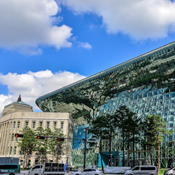
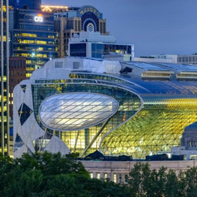
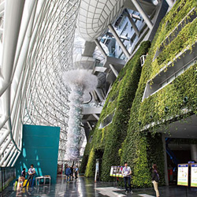
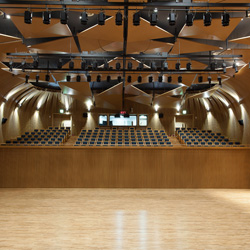
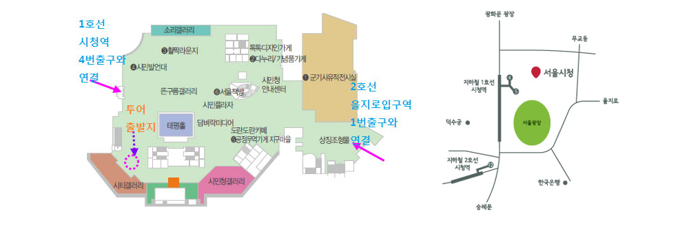

- 
- 
- 
- 
주요 컨텐츠
시청사 통통투어
시청투어 코스소개
2012년 10월에 새롭게 태어난 서울시 청사는 한국 전통가옥의 처마를 재해석한 친환경적 건물로 직원들이 근무하는 사무공간과 시민들이 즐기고 참여할 수 있는 다양한 체험과 볼거리를 제공 하고 있다. 가수 싸이의 뮤직비디오 촬영장소와 공연장소, 런닝맨 촬영장소, 보물로 지정된 불량기자포, 기네스북에 등재된 역사적인 장소까지 흥미로운 장소를 찾는 재미도 쏠쏠할 것이다.
해설사와 함께하는 通通투어는 청사 곳곳에서 발견되는 옛 흔적부터, 기네스북에 오른 수직정원, 옛 시장실 복원공간, 청사 건립시 발굴된 조선시대의 무기창인 군기시유적전시실, 건물 에너지 비밀 등 청사와 시민청, 도서관 곳곳을 코스별로 1시간에서 1시간 30분정도 진행 된다.
- ◎ 주차공간이 많이 부족하오니 되도록 대중교통을 이용해 주시기 바랍니다.
- ◎ 주차정보안내시스템(http://parking.seoul.go.kr/)에서 실시간 주차 가능면을 확인하실 수 있습니다.
- ◎ 청사 시설물을 보호하기 위해 높이 2.3m 이상 차량은 주차장으로 진입할 수 없습니다.
- ◎ 개방시간 : 매일 07:00~21:00(직원 05:00~23:00, 그 외 시간 청사 방호를 위해 출·입구 폐쇄)
- ◎ 주차요금 : 10분당 1,000원 (평일 09:00~18:00만 부과)
- ◎ 위치 : 지하 4층(101면)
시청투어 코스안내
| 일반코스 | 시티갤러리 → 옛 청사 흔적실 → 옛 시장실 복원실 → 외벽시계 → 수직정원 → 하늘광장 → 시장실앞 → 메타서사-서벌 → 군기시유적전시실 → 시민청 |
|---|---|
| 가족체험 코스 | 담벼락 미디어 → 군기시유적전시실 → 하늘광장 시민게시판 → 시장실 앞 → 메타서사 – 서벌 → 옛 시장실 복원실 |
| 장애인 코스 | 시민청 → 군기시유적전시실 → 옛 청사 흔적실→ 옛 시장실 복원실 → 수직정원 → 메타서사-서벌 → 하늘광장 → 시장실 앞 |
※ 토요일 14시는 가족체험코스이며, 현장참여의 경우 한국어 해설만 가능
※ 단체는 현장 참여 하실 수 없으며, 사전에 인터넷에서 단체 예약후 이용
※ 장애인 코스 예약은 별도로 전화문의(02-6925-0777, 02-2133-5637)
시청투어 해설시간
| 구 분 | 화 ~ 금 |
|---|---|
| 인터넷 사전 예약 | 한국어 : 10:00, 14:00 영어 : 10:30,15:00 중국어 : 11:00 일본어 : 14:30 |
| 현장참여 | 11:30, 12:00, 12:30 ‧ 15:30, 16:00, 16:30 |
※ 서울도서관 휴관일의 경우 옛 시장실 복원실 등 도서관 코스는 해설에서 제외됨
